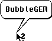

Die Icons werden immer zahlreicher und bunter, doch so manches mal verbirgt sich der Sinn - oder wozu war nochmal der Button da? Fragen, die sich jeder stellt.
Die Antwort: BubbleGEM. Mittels dieses kleinen Progrämmchens kann jeder Programmierer die beliebte und umsatzfördernde Sprechblasenhilfe einbauen und jeder Benutzer mehr über die Arbeitsoberfläche erfahren.
Grundsätzlich gibt es zwei Möglichkeiten, BubbleGEM aufzurufen. In den direkt folgenden Abschnitten wird der Aufruf aus unmodalen Dialogen, also aus Fensterdialogen, beschrieben, der am einfachsten ist. Seit der Release 05 kann man BubbleGEM nun aber auch aus modalen Dialogen aufrufen.
Als modernes Programm sucht man vor jedem Bubble-Aufruf per appl_find("BUBBLE ") die AES-Applikations-Identifikationsnummer (kurz: bubble_id) von BubbleGEM. Hat man die AES-ID erhalten, kann man die Nachricht BUBBLEGEM_SHOW (hexadezimal: 0xBABB) an die ap_id ver- schicken und erhält BUBBLEGEM_ACK (0xBABC) zurück.
Wichtig ist, daß die übergebene nullterminierte Zeichenkette maximal 255 Zeichen lang sein darf und daß sie global lesbar sein muß. In Systemen mit Speicherschutz kommt es sonst zu Schutzverletzungen, was die Professionalität Ihres Programms nicht gerade unterstreichen würde. Daher unbedingt globalen Speicher anfordern!
Die Nachricht BUBBLEGEM_SHOW sollte bereits losgesandt werden, wenn die rechte Maustaste heruntergedrückt wurde, nicht erst beim Los- lassen! Mit x und y übergibt man die Mauskoordinaten, an deren Stelle die Sprechblase dann gezeichnet wird.
Ein Umbruch in der Blase wird von BubbleGEM automatisch vorgenommen, wer trotzdem manuell eingreifen will, kann den senkrechten Strich "|" dafür verwenden. Leerzeichen davor oder dahinter sind nicht notwendig.
Ein kleines Beispiel in C:
#include <portab.h>
/* BUBBLEGEM_SHOW - Nachricht:
* msg[0] 0xBABB
* msg[1] ap_id
* msg[2] 0
* msg[3] Maus X
* msg[4] Maus Y
* msg[5/6] Pointer auf nullterminierte Zeichenkette im globalen
* Speicher
* msg[7] 0
*/
...
#define MGLOBAL 0x20
#define BUBBLEGEM_REQUEST 0xBABA
#define BUBBLEGEM_SHOW 0xBABB
#define BUBBLEGEM_ACK 0xBABC
#define BUBBLEGEM_ASKFONT 0xBABD
#define BUBBLEGEM_FONT 0xBABE
#define BUBBLEGEM_HIDE 0xBABF
#define MagX_COOKIE 0x4D616758L
#define MiNT_COOKIE 0x4D694E54L
...
WORD msg[8];
WORD bubble_id;
BYTE *bubble_text;
/* Feststellen, ob Mxalloc() vorhanden ist, wenn ja,
* dann Speicherschutz-Modus auf "Global" setzen
*/
if ((get_cookie (MagX_COOKIE, &val) == TRUE) ||
(get_cookie (MiNT_COOKIE, &val) == TRUE))
{
bubble_text = (BYTE *) Mxalloc (256, 0 | MGLOBAL);
}
else
bubble_text = (BYTE *) Malloc (256);
if (!bubble_text) /* Pointer ungültig, kein Speicher da */
return;
if (rechte_maustaste_ueber_button_gedrueckt)
{
/* Puffer füllen */
strncpy(bubble_text, "Meine erste Sprechblasenhilfe.", 255);
bubble_id = appl_find("BUBBLE ");
if (bubble_id >= 0)
{
msg[0] = BUBBLEGEM_SHOW;
msg[1] = ap_id;
msg[2] = 0;
msg[3] = x;
msg[4] = y;
msg[5] = (WORD)(((LONG) bubble_text >> 16)
& 0x0000ffff);
msg[6] = (WORD)((LONG) bubble_text & 0x0000ffff);
msg[7] = 0;
if (appl_write(bubble_id, 16, msg) == 0)
{
/* Fehler */
}
}
}
Als Antwortnachricht erhält man BUBBLEGEM_ACK (0xBABC) mit dem Pointer auf die Zeichenkette, deren Speicher man nun bei Bedarf freigeben kann. Die Arrayelemente 2, 3, 4 und 7 sind ausgenullt. Beim nichtmoda- len Aufruf kommt das BUBBLEGEM_ACK erst nach dem Schließen der Blase!
/* BUBBLEGEM_ACK (0xBABC) * * msg[0] 0xBABC * msg[1] ap_id * msg[2] 0 * msg[3] 0 * msg[4] 0 * msg[5/6] Pointer aus BUBBLEGEM_SHOW * msg[7] Gleicher Wert wie msg[7] beim Senden von BUBBLEGEM_SHOW; * derzeit 0. */ /* kurzer Beispielcode */ pointer = *(BYTE **) &msg[5]; if (pointer) Mfree(pointer);
Zu bedenken ist, daß man die Zeichenketten am besten extern auslagert, damit Übersetzungen in andere Sprachen leichter fallen - also am besten ins Resource-File oder eine separate ASCII-Datei damit.
Wenn bei BUBBLEGEM_SHOW das Bit BGS7_MOUSE (0x0004) in msg[7] gesetzt ist, werden die übergebenen Koordinaten nur zum Zeichnen verwendet; BubbleGEM ermittelt dann die Mauskoordinaten, anhand derer eine Bewegung der Maus erkannt wird (und die zum Schließen der Blase führt), kurz vor der Anzeige der Blase automatisch neu.
Der Aufruf aus modalen Dialogen (siehe auch die Aufrufroutine) erfolgt wie bei den unmodalen, vorausgesetzt, daß der BGEM-Cookie vorhanden ist. Man setzt im Gegensatz zum Aufruf aus unmodalen Dialogen jedoch BGS7_USRHIDE (0x0001) in msg[7].
Außerdem muß nach der Mausauswertung durch die aufrufende Applikation BUBBLEGEM_HIDE (0xbabf) an BubbleGEM geschickt werden. Die Auswertung der Maus- und Tastenereignisse muß die Applikation beim Aufruf aus modalen Dialogen selbst übernehmen.
Auf Systemen ohne wind_update()-Testmodus werden evtl. doppelte Hilfstexte angezeigt (direkt nacheinander). Dies ist derzeit leider nicht anders realisierbar.
Hier eine allgemeine Routine zum Aufruf von BubbleGEM in Pseudocode.
bubblegem:=appl_find('BUBBLE ');
if bubblegem<0 then
begin
pfad:=GetEnv('BUBBLEGEM');
if length(pfad)>0 then
begin
{ BubbleGEM nachstarten, ID in bubblegem merken }
if bubblegem>=0 then evnt_timer(500,0)
end
end;
if bubblegem<0 then exit; { BubbleGEM nicht gefunden -> Abbruch}
StrPCopy(bubblebuf,hilfetext);
msg[0]:=BUBBLEGEM_SHOW;
msg[1]:=apID;
msg[2]:=0;
msg[3]:=mx;
msg[4]:=my;
msg[5]:=integer(HiWord(bubblebuf));
msg[6]:=integer(LoWord(bubblebuf));
msg[7]:=0;
if unmodaler_Aufruf then
begin
appl_write(bubblegem,16,@msg);
evnt_timer(100,0)
end
else
begin
{ Aufruf aus einem systemmodalen Dialog heraus: }
if not(GetCookie('BGEM',bgemcookie)) then Bing { Fehler }
{ modaler Aufruf nur möglich, wenn BGEM-Cookie vorhanden }
else
begin
msg[7]:=msg[7] or BGS7_USRHIDE;
appl_write(bubblegem,16,@msg);
evnt_timer(10,0);
graf_mkstate(dummy,dummy,ms,dummy);
if (ms and 3)=0 then { keine Maustaste gedrückt? }
begin
bclicks:=258;
bmask:=3;
bstate:=0
end
else
begin
bclicks:=0;
bmask:=3;
bstate:=0
end;
if not(GetCookie('BHLP',delay)) then delay:=200
else
delay:=(delay shr 16) and 0x0000ffff;
graf_mouse(USER_DEF,bgemcookie->mhelp);
evnt_timer(delay,0);
evnt_multi(MU_KEYBD or MU_BUTTON or MU_M1, bclicks, bmask,
bstate, 1, mX-6, mY-6, 13, 13, 0, 0, 0, 0, 0, msg,
0, 0, dummy, dummy, ms, dummy, dummy, dummy);
msg[0]:=BUBBLEGEM_HIDE;
msg[1]:=apID;
msg[2]:=0;
msg[3]:=0;
msg[4]:=0;
msg[5]:=0;
msg[6]:=0;
msg[7]:=0;
appl_write(bubblegem,16,@msg);
graf_mouse(ARROW,NULL)
end;
repeat
graf_mkstate(dummy,dummy,ms,dummy)
until (ms and 3)=0
end;
Die Anpassung von Applikationen ist denkbar einfach:
Beim Empfang von BUBBLEGEM_REQUEST (0xBABA) ruft man BubbleGEM
ganz normal (allerdings mit den Koordinaten aus BUBBLEGEM_REQUEST)
auf, nachdem man anhand der empfangenen Koordinaten festgestellt hat,
ob man für diese Position eine Hilfe anbieten kann.
Die Message BUBBLEGEM_REQUEST ist wie folgt aufgebaut: msg[0]
:= BUBBLEGEM_REQUEST;
msg[1] := demonID;
msg[2] := 0;
msg[3] := winID; { AES-ID des Fensters unter dem Mauscursor }
msg[4] := mX; { Koordinaten der Maus }
msg[5] := mY;
msg[6] := KStat; { Status der Umschalttasten }
msg[7] := 0;
Die zeitgesteuerte Hilfe funktioniert nur nichtmodal.
Damit der Hilfe-Dämon funktionieren kann, muß das System
wind_get(WF_OWNER) unterstützen.
Der Dämon ist an, wenn Bit BGC_DEMONACTIVE (0x0008) im
BHLP-Cookie gesetzt ist; nach Änderung BUBBLEGEM_REQUEST (msg[3..7]
ausgenullt) an BUBBLE.APP schicken (statt wie bisher an HLPDEMON.APP)
Wenn BGC_TOPONLY (0x0010) gesetzt ist, arbeitet der HelpDemon
nur beim Top-Window.
An-/Ausschalten des Hilfe-Dämons auch per VA_START (obwohl CPX
besser, da Zustand an/aus gespeichert wird): "-demonon"
(="- demon1"), "-demonoff" (="-demon0")
Der Dämon-Timer ist per Default 200ms, er kann im Feld dtimer
des BGEM-Cookies geändert werden.
BHLP:
BubbleGEM wertet den Cookie "BHLP" aus. Im oberen Word ist die Dauer der Mindest-Sichtbarkeit eingetragen, Standard sind 200 Millisekunden. Das untere Word ist eine Bitmap; ist Bit 0 (0x0001 = BGC_FONTCHANGED) gesetzt, so bedeutet dies, daß FONT_CHANGED ausgewertet wird. Ist BGC_NOWINSTYLE (0x0002) (lies: no-win-style, nicht now-in-style) gesetzt, so wird die Hilfe als Sprechblase dargestellt (d.h. ein gelöschtes Bit entspricht der Windows-Hilfe!). Ein gesetztes Bit bei BGC_SENDKEY (0x0004) bewirkt, daß nach Schließen der Hilfe durch einen Tastendruck AV_SENDKEY an den Aufrufer geschickt wird. BGC_DEMONACTIVE (0x0008) bewirkt, daß Dämon eingeschaltet ist. BGC_TOPONLY (0x0010) bestimmt, ob der HelpDemon nur beim Top-Window arbeitet.
BGEM:
Zusätzlich wird der BGEM-Cookie gesetzt. Er ist nur zur Laufzeit von BubbleGEM vorhanden, d.h. er wird beim Start von BubbleGEM angelegt und bei AP_TERM entfernt.
typedef struct
{
long magic; /* 'BGEM' */
long size; /* Größe dieser Struktur, derzeit 18 */
int release; /* derzeit 7, nie kleiner als 5 */
int active; /* <>0, wenn gerade eine Hilfe angezeigt wird;
0 sonst */
MFORM *mhelp; /* Zeiger auf Hilfe-Mausform */
int dtimer; /* Dämon-Timer; Default 200ms; ab Release 6 */
} BGEM;
Die Struktur liegt im globalen Speicher. Wichtig: dtimer ist das einzige Feld, das für Lesen und Schreiben freigegeben ist, alle anderen Felder sind read only!
Will man BubbleGEM von Hand nachstarten, falls es noch nicht läuft, so findet man in der Environmentvariablen "BUBBLEGEM" den absoluten Pfad inklusive Programmnamen zum BUBBLE.APP, also für MagiC etwa:
#_ENV BUBBLEGEM=D:\Tools\Bubble\Bubble.app
BUBBLEGEM_ASKFONT wird beim Start von BubbleGEM an den AV-Server oder an die Applikation mit der AES-ID 0 geschickt. Diese sollte dann mit der Nachricht BUBBLEGEM_FONT antworten (Jinnee macht das bspw.).
msg[0] = BUBBLEGEM_ASKFONT; msg[1] = apID; msg[2] = 0; msg[3] = 0; msg[4] = 0; msg[5] = 0; msg[6] = 0; msg[7] = 0; msg[0] = BUBBLEGEM_FONT; msg[1] = apID; msg[2] = 0; msg[3] = FontID; msg[4] = FontPt; msg[5] = 0; msg[6] = 0; msg[7] = 0;
Wenn BubbleGEM diese Nachricht empfängt, nimmt es ab sofort den Font mit der ID msg[3] und der Größe (in Punkt) msg[4] zur Darstellung der Hilfeblasen. ID und Größe werden ohne Prüfung übernommen. Außerdem reagiert BubbleGEM auf FONT_CHANGED, wenn das entsprechende Feld im CPX-Modul aktiviert ist.
msg[0] = AV_SENDCLICK /* 0x4709 */ msg[1] = ap_id; msg[2] = 0; msg[3] = ev_mmox; msg[4] = ev_mmoy; msg[5] = ev_mmobutton; msg[6] = ev_mmokstate; msg[7] = ev_mbreturn;
AV_SENDCLICK wird verschickt, wenn die Blase durch Klicken geschlossen wurde (also nicht, wenn BubbleGEM mit gedrückter Maustaste aufgerufen wird und die Blase durch Loslassen geschlossen wird!). AV_SENDCLICK ist das Pendant zu AV_SENDKEY.